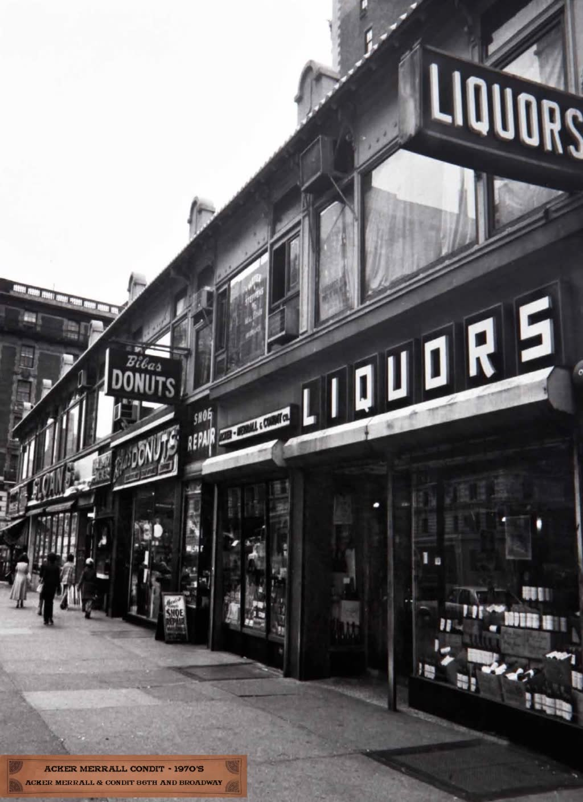
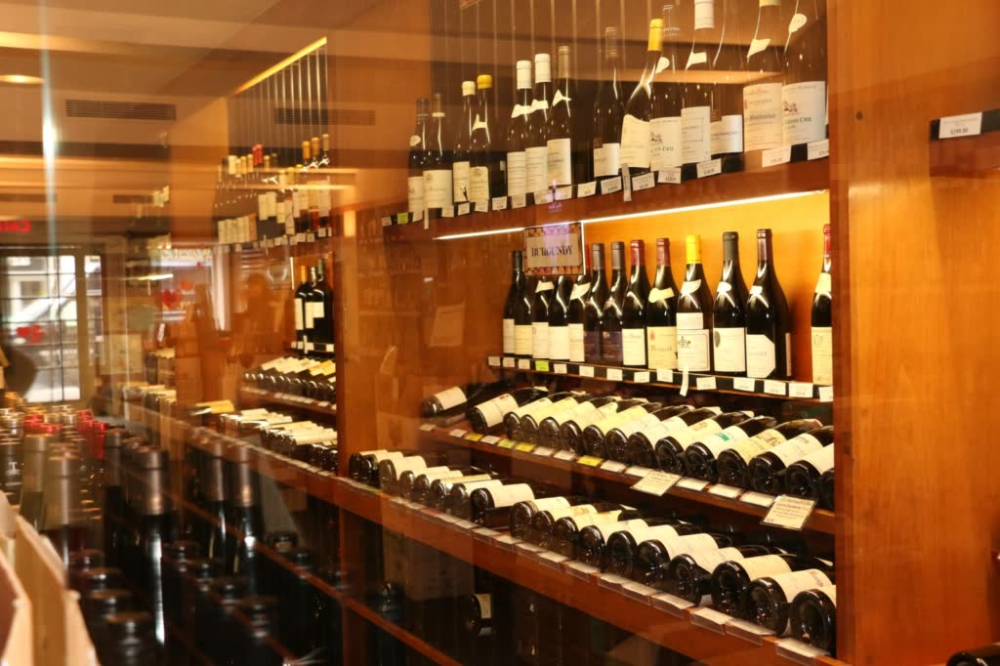
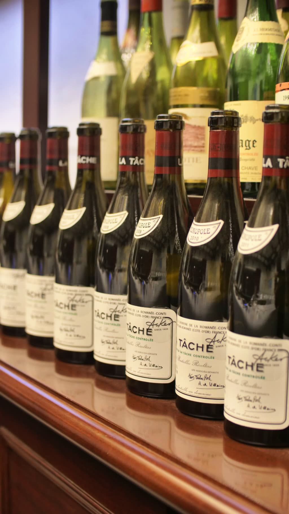
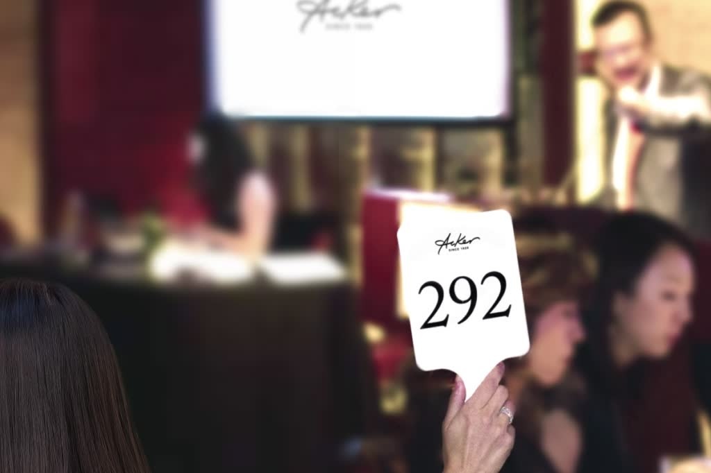
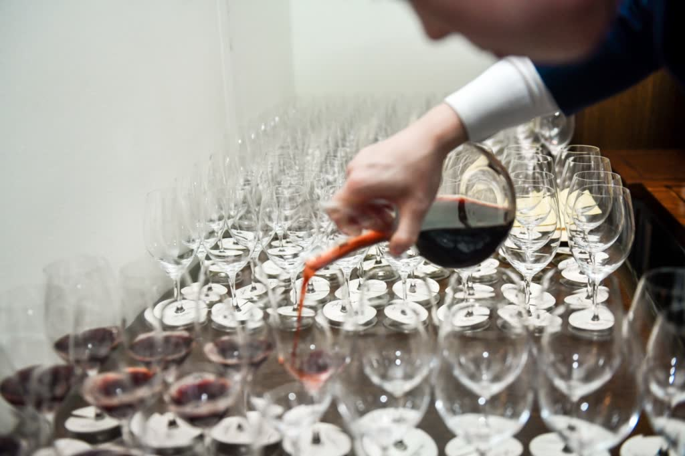
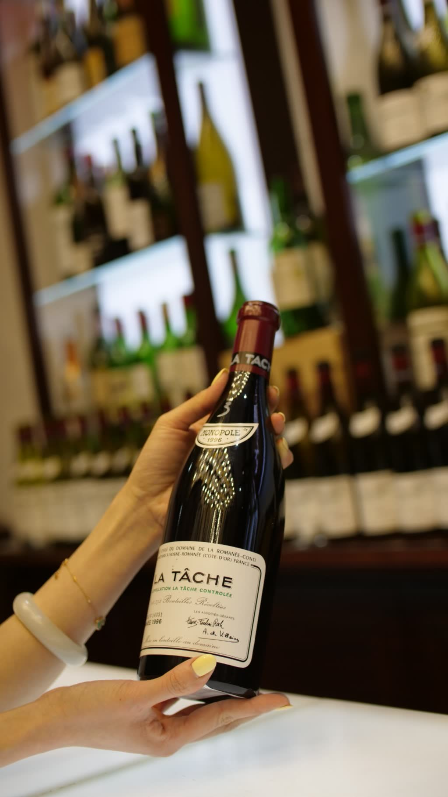
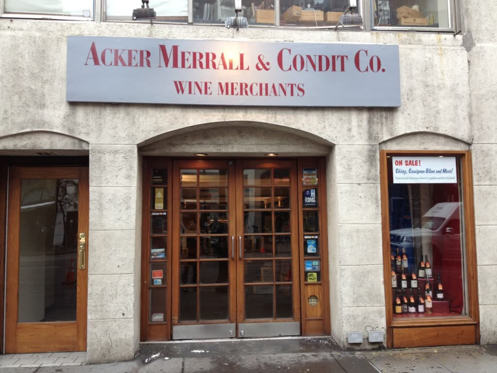

New York · Hong Kong · Global
Institutional-Grade Liquidity for the Fine Wine Market
The world's #1 fine wine auction house now extends its expertise into structured finance — empowering collectors, consignors, and investors with the tools they need to thrive.
AWFS
Acker Wines Financial Services (AWFS) is a dedicated independent entity designed to provide tailored financial solutions for discerning clients in the fine and rare wine market. With decades of unrivaled expertise and record-breaking auction results, Acker now extends its commitment to excellence into the world of structured finance.
AWFS adheres strictly to institutional lending standards, operating entirely separate from all other Acker business lines — ensuring professionalism, transparency, and confidence in every transaction.
View our financial solutions →Financial Products
Purpose-built for the unique dynamics of the fine and rare wine market.

Access liquidity while retaining full ownership and storage of your collection. Your wines remain in Acker's world-class storage — you receive the capital you need.
Retain Ownership →
Enabling clients to acquire desired wines with flexible, tailored financing options — move quickly on acquisition opportunities without tying up existing capital.
Flexible Terms →
A 30-day standard advance structure for consignors — providing immediate working capital to sellers consigning wine to Acker's premier global auctions.
Immediate Capital →
Full payout within 3 business days following an auction — ensuring swift and certain access to proceeds for all successful consignors worldwide.
3-Day Settlement →
Facilitating swift and substantial purchases of entire collections or significant retail inventories with the full force of Acker's global liquidity and reach.
Entire Collections →
Unlock capital without selling prized holdings — supporting long-term investment strategies and enabling faster reinvestment in new market opportunities.
Strategic Solutions →Why AWFS
Access liquidity without sacrificing ownership of your most prized bottles. Support portfolio management and long-term investment strategies without forced sales.
Receive proceeds from consignments and auctions faster than ever — enabling rapid reinvestment and the ability to capture emerging market opportunities.
Act with confidence on individual bottles, full collections, or large retail transactions — backed by tailored financing structured around your specific needs.
Every transaction is governed by strict institutional lending protocols, providing the same level of rigor and confidence expected by the world's most sophisticated investors.
AWFS operates as a fully independent entity — ensuring professional separation, complete transparency, and strict compliance at every step of the process.
From New York to Hong Kong, leverage the world's foremost fine wine network. Our unmatched market intelligence informs every financial solution we structure for you.
Leadership
In today's dynamic fine wine market, where collections often represent significant assets, access to efficient and reliable liquidity is essential. AWFS empowers our clients to unlock capital, accelerate cash flow, and pursue acquisitions with confidence — backed by Acker's unmatched expertise in the fine wine market.
Managing Director, Acker Financial Services
Meet the Leader
Scroll to exploreWith decades of leadership at the helm of the world's foremost fine wine auction house, Irvin brings unmatched depth of market knowledge and institutional relationships to AWFS.
Newly appointed to lead AWFS, Xiomy brings deep expertise in finance and capital markets. Together, the leadership team combines 60 years of experience to deliver innovative, institutional-grade financial services.
Get in Touch
Our team is available to discuss bespoke financial solutions tailored to your needs. Whether you're a collector, consignor, or institutional investor — AWFS has a solution for you.
Request a Consultation →Acker Wines Financial Services (AWFS) is an independent entity offering institutional-grade financial products tailored to the fine and rare wine market. AWFS operates separately from all other Acker business lines and adheres strictly to institutional lending standards.
